Android StudioJava 11Room v2 con migración Sin internet30 pruebas JUnit Motor 2.5DBlender 3DShaders AGSL
Versión 3 · motor visual 2.5D, funciones especiales y minijuego de batalla contra Mecha-Kaiju
Alumno: Emilio Garduño Servín · Modalidad: individual · Paquete: com.cesba.godzipet · minSdk 24 / targetSdk 36
El jugador recibe un huevo de kaiju de uno de cuatro orígenes (Isla Odo, Isla Adonoa, Isla del Nacimiento o Nueva York). Al tocarlo 5 veces eclosiona un Baby Godzilla que crece siguiendo la cronología japonesa de la saga:
| Etapa | Referencia en el cine japonés |
|---|---|
| Huevo | Punto de partida: no se deteriora y no puede viajar ni jugar |
| Baby Godzilla | Godzilla vs. Mechagodzilla II (1993) |
| Little Godzilla | Godzilla vs. SpaceGodzilla (1994) |
| Godzilla Junior | Godzilla vs. Destoroyah (1995) |
| Forma final | Una de cuatro eras: Showa (1954-1975), Heisei (1984-1995), Burning (el núcleo al borde de la fusión) o Shin (2016) |
Sus necesidades bajan con el tiempo real, aunque la app esté cerrada. Cada decisión cambia su estado, su economía y la forma final en la que evolucionará. La mecánica que lo distingue es la radiación, que no se llena sino que se equilibra (sección 7).
| # | Experiencia pedida | Dónde se cumple |
|---|---|---|
| 01 | Nueva partida: elegir huevo y nombre | InicioActivity → SeleccionActivity: 4 orígenes con bono distinto y nombre validado de 2–14 caracteres |
| 02 | Consultar necesidades y cuidarlo | HogarFragment: 6 indicadores con valor numérico, mensaje contextual, 8 acciones (incluye Aliento) |
| 03 | Minijuegos por monedas y XP | DefensaActivity, AnillosActivity, MemoriaActivity y BatallaActivity (4 minijuegos) |
| 04 | Comprar y administrar inventario | TiendaFragment con pestañas Tienda / Inventario |
| 05 | Decorar, viajar, misiones, evolución | GuaridaFragment, MapaActivity, MisionesFragment, ProgresoActivity, KaijupediaActivity |
| 06 | Cerrar y reabrir sin perder la partida | Room (godzipet.db) + marca ultimaActualizacion; guardado tras cada acción, cada 10 s (MainActivity) y en onPause |
Inicio de sesión: cuentas locales (LoginActivity), sin internet. La contraseña se guarda como hash PBKDF2-HMAC-SHA256 con sal aleatoria (sección 17). Cada usuario tiene su propia partida.
| Capa / paquete | Clases | Responsabilidad |
|---|---|---|
modelo (Java puro, probado con JUnit) | Stat, Necesidades, Deterioro, EstadoAnimo, Etapa | 6 indicadores (0–100; la radiación se evalúa por zona ideal), tiempo real, 10 estados |
Partida, Personaje, Contadores, Evento | Estado completo, fusión y generaciones, viajes, secretos, historial de hábitos, caricias | |
Cuidados, Minijuego, Resultado, Reaccion | 8 acciones (7 de cuidado + Aliento) con validaciones y 4 minijuegos (incluye la Batalla contra Mecha-Kaiju) | |
Articulo, Catalogo, TipoArticulo, Tienda, Inventario, Guarida, Slot | Economía, inventario y decoración en 4 posiciones | |
Mision, GestorMisiones, Niveles | 4 diarias y 7 logros; 6 niveles por experiencia | |
Evolucion, RutaEvolucion, OrigenHuevo | Regla de evolución final, 4 formas finales y 4 orígenes de huevo | |
Escenario, Secreto, Record, AlertaKaiju | 8 escenarios, 12 secretos, récords y alertas kaiju | |
ModoProfesor | Herramientas del modo evaluador (sección 16) | |
datos | BaseDatos (Room v2 y MIGRACION_1_2), JuegoDao, 6 entidades, Instantanea, Repositorio, Preferencias, Seguridad | Persistencia en hilo de fondo, guardado atómico (@Transaction), respaldo del modo evaluador, hash de contraseñas |
juego | Juego, Alertas, AlarmaReceiver, DetectorAgitar, Microfono, Sonidos, Musica, Inclinacion, Vibracion, WidgetKaiju | Partida en memoria, notificaciones, sensor de agitar, micrófono que sólo mide volumen, rugido sintetizado, música japonesa (koto y taiko), sensor de inclinación, vibraciones y widget de inicio |
vista | KaijuPainter, PetView, Parallax, Render25D, Efectos3D (AGSL), BatallaView, PosterPainter, Filtros, Clima, Escenas, GuaridaView, DefensaView, AnillosView, BarraView, Particulas | Dibujo vectorial, motor 2.5D (capas, sombra, perspectiva y shaders), animaciones, filtros, clima, foto póster y batalla |
ui | 15 actividades (incluye CamaraActivity y BatallaActivity), 1 base de minijuegos, 5 fragmentos y la vista KaijuArView (realidad aumentada casera) | Pantallas, navegación y "Godzilla en tu cuarto" |
| Tabla | Guarda |
|---|---|
usuarios | usuario (único), sal, hash |
partidas | personaje, etapa, ruta, 6 indicadores, sueño, ultimaActualizacion, monedas, XP, aliento, alerta kaiju, esperas, contadores de hábitos y los datos de la versión 2 (abajo) |
inventario | artículo y cantidad por usuario |
decoraciones | decoración equipada en cada posición |
misiones | recompensas reclamadas (día o "LOGRO") |
records | mejor puntaje, victorias y partidas por minijuego |
Migración 1 → 2 (MIGRACION_1_2): agrega a partidas sin borrar datos las columnas radiacion (por defecto 55), fusion, generacion, escenario, ultimaCentral, cCentrales, sumaRadiacion, entrenosBase, cuidadosBase, hoyMinutosZona, secretos, visitados y formas. A las partidas antiguas se les rellena sumaRadiacion con 55 por minuto de su historial, para que el promedio de radiación no quede en cero.
Las preferencias simples (sesión, sonido, notificaciones, agitar, micrófono, filtro, modo demostración y modo evaluador) van en SharedPreferences.
| Permiso | Para qué se usa | Cuándo se pide y si es opcional |
|---|---|---|
CAMERA | "Godzilla en tu cuarto" (CamaraActivity): vista previa de la cámara trasera sobre la que se dibuja el kaiju. La foto sólo se guarda en la caché de la app para compartirla. | En tiempo de ejecución, al abrir la función desde Hogar. Sin permiso, la pantalla avisa y no muestra la cámara. |
RECORD_AUDIO | Rugirle al teléfono (Microfono): durante 4 segundos sólo se mide el volumen. Nada se graba ni se guarda. | En tiempo de ejecución, al activar el micrófono en Ajustes. Opcional: se puede desactivar. |
VIBRATE | Vibraciones de Vibracion: pisadas, terremoto, rugido y ronroneo. | Permiso normal (sin diálogo). Opcional: interruptor "Vibración" en Ajustes. |
POST_NOTIFICATIONS | Avisos del kaiju (necesidades críticas, sobrecalentamiento y fin del descanso). | En Android 13 o superior, al primer aviso. Opcional: preferencia de notificaciones. |
Las funciones de cámara, micrófono, giroscopio y acelerómetro se declaran con required="false", así que la app se puede instalar en dispositivos que no tengan esos sensores.
| Indicador | Despierto (por hora) | Dormido (por hora) |
|---|---|---|
| 🐟 Alimentación | −8 | −4 |
| 🫧 Higiene | −5 | −2 |
| ⚡ Energía | −4 (−2 más si la radiación está por debajo de 20) | +120 |
| 😊 Felicidad | −4 (−8 si alimentación o higiene < 30); 0 en la Isla de los Monstruos | la mitad |
| ❤ Salud | −6 si alimentación o higiene < 20 o energía < 10 · −5 si la radiación ≥ 85 · +2 si el promedio ≥ 60 y nada es crítico | igual |
| ☢ Radiación | −3 (la forma Burning sube +1) | −1,5 |
casoObligatorio_80DeAlimentacionBajaA64TrasDosHoras, verificado también en el emulador). El cálculo se hace en pasos de 1 minuto, separando el tramo dormido del despierto, con tope de 7 días sin conexión.El huevo no se deteriora. Modo demostración (Configuración): el tiempo corre ×20 (1 min real = 20 min de juego) para mostrar el deterioro en clase. La ruta Showa reduce a la mitad la pérdida de felicidad; la Shin multiplica el deterioro por 1,25.
Se calculan con EstadoAnimo.calcular, nunca con un botón. Se aplica el primero que se cumpla:
| # | Estado | Condición | Mensaje en pantalla |
|---|---|---|---|
| 1 | Dormido | Está durmiendo | Zzz… está recuperando energía. |
| 2 | ¡En fusión! | Radiación ≥ 85 | Su núcleo se sobrecalienta. Enfríalo en el mar o con un misil de cadmio. |
| 3 | Enfermo | Salud < 30 | Usa un botiquín de la Fuerza G. |
| 4 | Sin radiación | Radiación < 20 | Sus placas no brillan. Llévalo a una central nuclear o dale un isótopo. |
| 5 | Hambriento | Alimentación < 25 | Dale de comer. |
| 6 | Sucio | Higiene < 25 | Necesita nadar en el mar. |
| 7 | Cansado | Energía < 20 | Mándalo a dormir. |
| 8 | Triste | Felicidad < 35 | Juega con él o llévalo a un minijuego. |
| 9 | Feliz | Felicidad ≥ 75 y promedio ≥ 65 | ¡Está de excelente humor! |
| 10 | Normal | Ninguna de las anteriores | Vigila la costa de Japón tranquilamente. |
| Acción | Efecto | Restricciones |
|---|---|---|
| 🍙 Comer | Según la comida que se consuma del inventario (tabla de la sección 10) | Debe tener la comida; no si está dormido o si la alimentación es ≥ 95 |
| 🎾 Jugar | +15 felicidad, −10 energía, −5 alimentación, −5 higiene | Energía ≥ 15, espera de 20 s, despierto |
| 💤 Dormir | +5 energía, +3 salud; duerme 20 min de juego recuperando +120/h | Energía < 85. Si ya duerme, el botón cambia a "Despertar" (−5 felicidad) |
| 🌊 Nadar | Con jabón: +40 higiene, +5 felicidad. Sin jabón: +15 higiene, −3 energía. Siempre −12 radiación (−24 en la Bahía de Tokio) | Higiene < 95; el baño gratis tiene espera de 60 s |
| ⛑ Curar | +35 salud, +5 energía, −4 felicidad | Requiere Botiquín Fuerza G; salud < 95 |
| 💪 Entrenar | −20 energía (×0,75 en Heisei), −10 alimentación, −10 higiene, +5 felicidad, +20 aliento, +15 XP | Energía ≥ costo + 5, alimentación ≥ 20, salud ≥ 30, espera de 30 s |
| ☢ Central | +25 radiación (×1,5 en Burning), +10 energía, +5 felicidad, −5 higiene, +10 aliento (la mitad antes de Junior) | Despierto; espera de 45 s para que la central se recargue |
| 🗺 Viajar | Cambia de escenario (sección 12); +10 XP la primera vez en cada uno | Nivel requerido; no con el huevo ni dormido |
| 🔥 Aliento | Se explica en la sección 8 | Carga 100/100 |
Cada acción reproduce una animación ("¡ÑAM!", burbujas, "¡POW!", corazones, cruces verdes), un sonido de éxito o error, y se guarda de inmediato. Los errores muestran el motivo (por ejemplo, "Espera 12 s antes de repetirlo" o "Necesita 35 de energía para entrenar").
En casi cualquier mascota virtual, un indicador sólo "más es mejor" o "menos es peor". Aquí la radiación (el sexto indicador) funciona al revés: no se llena, se equilibra. Su zona ideal es 40–70, donde la calidad vale 100. Fuera de esa zona, la calidad baja 2,5 puntos por cada unidad de distancia. Por eso el exceso también mata: con 85 o más se sobrecalienta (−5 salud por hora) y con 95 o más, sostenido, el núcleo se funde.
| Origen | Cambio de radiación |
|---|---|
| Decaimiento natural | −3 por hora despierto; −1,5 por hora dormido |
| Central nuclear | +25 (×1,5 en Burning) |
| Pescado radioactivo / Isótopo energético | +20 / +25 |
| Nadar | −12 (−24 en la Bahía de Tokio) |
| Misil de cadmio (tienda) | −35 |
| Aliento Atómico (desde Junior) | −15 |
| Forma Burning | +1 por hora, su núcleo nunca se enfría solo |
Antes de Junior la radiación no puede pasar de 90 (el cuerpo de las crías no soporta más). La fusión sólo puede ocurrir desde Godzilla Junior en adelante.
Cuando Godzilla se funde, Godzilla Junior absorbe su radiación y empieza una nueva generación: vuelve a Junior con radiación 50, salud 80, energía 70 y felicidad 60, el aliento se llena y su experiencia se reduce al umbral de Junior. Cada generación da un bono de +10 % de experiencia, hasta un máximo de +30 % (tres fusiones). El evento se registra como secreto "Meltdown" en la Kaiju-pedia.
Por qué es única: ninguna otra mecánica del juego obliga a equilibrar un valor en lugar de maximizarlo, ni castiga el exceso con una transformación de la historia. El jugador debe decidir cuándo cargar la radiación (central, pescado, isótopo) y cuándo enfriarla (mar, cadmio) para llegar a Junior sin fundirlo, y a la vez puede aprovecharla para la forma Burning.
Una barra de carga 0–100 que se llena al entrenar (+20), al visitar una central (+10), con pescado radioactivo (+25), con isótopo (+10) y al ganar una Alerta Kaiju (+10). Con 100 aparece el botón del aliento (requiere energía ≥ 10). Lo que sale depende de la etapa: De Baby o Little Godzilla sale un anillo de humo (como Minilla en 1967): +15 felicidad, −5 energía y +10 XP. Desde Godzilla Junior sale el rayo atómico: +25 felicidad, −10 energía, −15 radiación y +20 XP. La forma Heisei carga el aliento al doble.
Como en cada película, un monstruo mutante ataca una ciudad japonesa (una mantis gigante, un pteranodón colosal, una langosta mutante, una polilla oscura, un robot de guerra o un dragón de tres cabezas, en Shinjuku, Shibuya, Yokohama, Shinagawa, Haneda u Osaka). Desde el nivel 3 aparece cada 10–25 min de juego y dura 8 min. DEFENDER cuesta 20 de energía y requiere salud ≥ 30. La probabilidad de ganar va de 30 % a 85 % según energía, salud y calidad de la radiación; con aliento al 100 % o en forma Burning siempre se gana. Una victoria da 40 monedas y 30 XP (45 XP en Burning). Una derrota le cuesta −10 felicidad y −10 salud. Si se ignora, incluso con la app cerrada, la ciudad sufre daños al volver: −15 felicidad y −5 salud.
| Defensa de Tokio (reflejos) | Anillos de Humo | Memoria Fuerza G (parejas) | Batalla contra Mecha-Kaiju | |
|---|---|---|---|---|
| Acceso | Nivel 1 · 15 de energía | Nivel 1 · 10 de energía | Nivel 2 · 10 de energía | Nivel 3 · 25 de energía |
| Interacción | Tocar kaijus que emergen de la bahía antes de que escapen; cada vez salen más rápido. Con aliento al 100 % se puede arrasar una vez | Como Minilla: tocar la pantalla para soltar anillos de humo contra insectos gigantes que vuelan sobre la isla | Voltear cartas 4×4 con animación para encontrar las 8 parejas | Toca los misiles antes de que impacten. Mantén presionado para cargar el aliento atómico (1,3 s) y suéltalo para disparar. Un láser avisa antes de disparar. Con el aliento al 100 % se puede usar una vez el disparo máximo |
| Duración | 30 s | 30 s | 60 s | 60 s |
| Victoria | ≥ 15 aciertos | ≥ 10 aciertos | 8 parejas antes de agotar el tiempo | Dejar la vida del robot en 0 antes de que se acabe el tiempo. Pierde si se queda sin vida o si se acaba el tiempo |
| Puntaje | 10 por acierto | 10 por acierto | 10 por pareja + segundos restantes si gana | Daño causado (% de la vida del robot) + vida que te queda + 2 por cada segundo sobrante si gana |
| Premio (monedas) | puntaje/5 (+20 si gana) | puntaje/5 (+15 si gana) | puntaje/4 (+15 si gana) | puntaje/5 (+40 si gana) |
| Experiencia | puntaje/10 + 15 si gana (+3 si pierde). Al empezar cuesta energía y −3 higiene; al terminar, +15 felicidad si gana o +5 si pierde | |||
Todos tienen instrucciones, inicio, opción Repetir y guardan mejor puntaje y victorias en la tabla records. Salir a mitad de la ronda cuenta como derrota con el puntaje parcial.
| Tipo | Artículos (precio · nivel) y efecto principal |
|---|---|
| Comida (4) | Onigiri 8 · nv 1 (alim. +12, fel. +3) · Atún gigante 15 · nv 1 (alim. +25, fel. +6) · Ramen humeante 18 · nv 1 (alim. +22, fel. +10, ener. +3) · Pescado radioactivo 30 · nv 2 (alim. +15, fel. +4, ener. +10, salud −2, aliento +25, radiación +20) |
| Cuidado (4) | Jabón marino 12 · nv 1 (higiene +40, fel. +5) · Botiquín Fuerza G 35 · nv 1 (salud +35, ener. +5, fel. −4) · Misil de cadmio 25 · nv 1 (radiación −35, salud −5, fel. −5) · Isótopo energético 40 · nv 2 (ener. +40, radiación +25, aliento +10, fel. +3) |
| No se vende | Destructor de Oxígeno (99 999 monedas): sólo se muestra como secreto; la tienda lo rechaza |
| Decoración (11) | Ventanal: Vista al Monte Fuji 60 (nv 1), Isla Odo de noche 80 (nv 2), Isla de los Monstruos 110 (nv 3) · Rincón izquierdo: Linterna de piedra 50 (nv 1), Torre de Tokio miniatura 120 (nv 4) · Rincón derecho: Muñeco Daruma 45 (nv 1), Bonsái de pino 70 (nv 2), Reloj de la torre Wako 90 (nv 3) · Suelo: Tatami 30 (nv 1), Alfombra La Gran Ola 65 (nv 2), Estanque koi 85 (nv 3) |
La compra se bloquea si no hay saldo (indica cuánto falta), si el nivel es insuficiente, si la decoración ya se posee o si el inventario llega a 99 unidades. Los consumibles bajan su cantidad al usarse; las decoraciones se equipan sin consumirse en 4 posiciones fijas de la guarida, sólo si se poseen, y se ven igual al reabrir la app.
| Nivel (XP) | Desbloqueo |
|---|---|
| 1 (0) | Isla Odo, Bahía de Tokio, Defensa de Tokio y Anillos de Humo |
| 2 (60) | Evoluciona a Little Godzilla · Memoria Fuerza G · Ginza 1954 · Monte Fuji |
| 3 (150) | Evoluciona a Godzilla Junior · Aliento Atómico real · Alertas Kaiju · Torre de Tokio |
| 4 (280) | Castillo de Osaka · Torre de Tokio en miniatura |
| 5 (450) | ¡Forma final según cómo lo cuidaste! · Kamakura |
| 6 (700) | Isla de los Monstruos · título "Rey de los Monstruos" (+10 monedas por misión) |
| Tipo | Misión | Meta | Recompensa |
|---|---|---|---|
| Diaria (se renuevan a medianoche) | Hora del almuerzo | Alimentarlo 3 veces | 30 monedas, 20 XP |
| Diaria | Reflejos de kaiju | Jugar 2 minijuegos | 40 monedas, 25 XP |
| Diaria | Rutina de combate | Entrenar 2 veces | 30 monedas, 25 XP |
| Diaria | Núcleo estable | Radiación en zona ideal (40–70) durante 60 min de juego | 45 monedas, 30 XP |
| Logro | Rey en ascenso | Alcanzar el nivel 4 | 100 monedas |
| Logro | Campeón de Tokio | Ganar 5 minijuegos | 120 monedas, 50 XP |
| Logro | Decorador zen | Equipar 3 decoraciones a la vez | 80 monedas, 30 XP |
| Logro | Protector de Japón | Ganar 3 Alertas Kaiju | 150 monedas, 60 XP |
| Logro | Gira por Japón | Visitar 5 escenarios distintos | 120 monedas, 40 XP |
| Logro | Fan de Toho | Descubrir 5 secretos | 150 monedas, 50 XP |
| Logro | Forma definitiva | Alcanzar una forma final | 200 monedas |
Cada recompensa se marca como reclamada (con el día, en las diarias), por lo que no puede cobrarse dos veces.
| Forma final | Era / idea | Ventaja y desventaja |
|---|---|---|
| Godzilla Showa 昭和 | El héroe (1954-1975) | +25 % monedas · la felicidad baja un 50 % más lento |
| Godzilla Heisei 平成 | El guerrero (1984-1995) | Aliento Atómico carga ×2 · entrenar cuesta 25 % menos energía |
| Burning Godzilla バーニング | Su núcleo al borde de la fusión (1995) | Gana siempre las Alertas Kaiju y +50 % XP en ellas · su radiación sube 50 % más rápido |
| Shin Godzilla シン | Forma secreta (2016) | +25 % de experiencia · sus necesidades bajan 25 % más rápido |
| Escenario | Película de referencia | Nivel | Qué tiene de especial |
|---|---|---|---|
| Isla Odo 大戸島 | Godzilla (1954) | 1 | La aldea pesquera donde todo comenzó |
| Bahía de Tokio 東京湾 | Godzilla (1954) | 1 | Nadar aquí enfría la radiación el doble (−24) |
| Ginza 1954 銀座 | Godzilla (1954) | 2 | La torre del reloj Wako marca la hora real del teléfono |
| Monte Fuji 富士山 | King Kong vs. Godzilla (1962) | 2 | El paisaje más clásico de Japón |
| Torre de Tokio 東京タワー | Mothra vs. Godzilla (1964) | 3 | Tocar la punta de la torre activa el secreto "Visita de Mothra" |
| Castillo de Osaka 大阪城 | Godzilla Raids Again (1955) | 4 | Donde luchó contra Anguirus |
| Kamakura 鎌倉 | Shin Godzilla (2016) | 5 | El Gran Buda vigila la costa |
| Isla de los Monstruos 怪獣島 | Destroy All Monsters (1968) | 6 | La felicidad no baja aquí |
Doce easter eggs para fans. Cada uno da 15 XP al descubrirse y aparece en la Kaiju-pedia con su dato cuando se encuentra; antes sólo se ve la pista.
| Secreto | Cómo encontrarlo | Dato |
|---|---|---|
| ¡Shie! | Tocar su cabeza 7 veces seguidas | Baile de la victoria de Godzilla en Invasion of Astro-Monster (1965) |
| Anillos de humo | Usar el aliento siendo Baby o Little Godzilla | Minilla, el hijo de Godzilla (1967), soplaba anillos de humo |
| Destructor de Oxígeno | Intentar comprarlo en la tienda | El arma del Dr. Serizawa, que derrotó al primer Godzilla en 1954 |
| Modo 1954 | Activar el filtro en blanco y negro | La película original de Ishirō Honda se filmó en blanco y negro |
| Visita de Mothra | Tocar la punta de la Torre de Tokio | Mothra tejió su capullo en la Torre de Tokio |
| Gorira + Kujira | Tocar el título ゴジラ en la Kaiju-pedia | "Gojira" combina gorira (gorila) y kujira (ballena) |
| El rugido | Rugir al micrófono o escuchar el rugido en la Kaiju-pedia | Akira Ifukube creó el rugido frotando una cuerda de contrabajo con un guante de resina |
| Meltdown | Dejar que la radiación llegue a la fusión | En Godzilla vs. Destoroyah (1995) su núcleo se fundió y Junior heredó su poder |
| ¡Terremoto! | Agitar el teléfono | Cada paso de Godzilla hacía temblar Tokio |
| Misil de cadmio | Usar un misil de cadmio | En The Return of Godzilla (1984) usaron cadmio para frenar su reactor |
| Nueva York | Elegir el huevo de Nueva York | Homenaje a la serie animada de 1998, con rayas granate |
| 終 | Reiniciar una partida | Las películas japonesas clásicas terminaban con el kanji 終 (Fin) |
La versión 3 da profundidad a la escena sin un motor 3D en tiempo real. Los fondos se pre-renderizan en Blender como capas de parallax; el kaiju sigue dibujado con Canvas y recibe sombra, contraluz y perspectiva en código; los efectos de GPU son un único shader AGSL.
| Técnica | Qué hace | Clase |
|---|---|---|
| Parallax de 5 capas | Cielo, lejos, medio, cerca y primer plano se desplazan a distinta velocidad (2, 5, 9, 14 y 22 % del ancho). El primer plano se dibuja delante del kaiju. Hay una deriva lenta automática del fondo. | Parallax |
| Parallax por inclinación | Al inclinar el teléfono las capas se mueven. Usa el sensor de gravedad (no exige giroscopio), se suaviza y toma la postura inicial como referencia. | Inclinacion, PetView |
| Día, noche y atardecer reales | Según la hora y los minutos del teléfono, la noche mezcla la versión de día y de noche de cada capa; el atardecer añade un tinte cálido; la posición del sol o de la luna define la dirección de la luz. | PetView (calcularLuz), Parallax |
| Sombra proyectada | Sombra aplanada y sesgada sobre el suelo, en dirección contraria a la luz del momento. | Render25D |
| Contraluz (rim light) | Borde de luz del color ambiente que se desplaza según la dirección de la luz. | Render25D |
| Perspectiva 3D | El kaiju gira hasta 16° en horizontal y 7° en vertical con android.graphics.Camera, siguiendo la inclinación del teléfono. | Render25D |
| Reflejo en suelo mojado | Reflejo invertido y tenue bajo los pies con lluvia y, de noche, en Ginza y Bahía de Tokio. | Render25D |
| Shader AGSL (GPU) | Un solo shader (Android 13+) con calor (Burning y fusión), onda de choque con aberración cromática, ondas en el agua, rayos de luz volumétricos, resplandor y viñeta. Si todos sus parámetros son neutros, el efecto se retira. | Efectos3D |
| Cámara cinematográfica | Acercamiento de hasta 14 % durante el aliento atómico y de 6 % durante la evolución. | PetView |
| Paseo con huellas | El kaiju camina por el escenario, deja huellas que duran 9 s y levanta polvo; se detiene y vuelve a pasear. | PetView |
| Lluvia y relámpagos | Con lluvia aparecen destellos de relámpago a intervalos aleatorios, con sacudida de cámara. | PetView, Escenas |
app/src/main/assets/escenas/<ESCENARIO>/<dia|noche>_<capa>.webp (capas 0 a 4).tools/blender/ todavía no existe y app/src/main/assets/escenas/ está vacía. Por eso hoy la app usa las escenas de Canvas; los renders se añadirán después.Cómo activarlo: en la pantalla de título, tocar 7 veces seguidas el kanji ゴジラ; aparece el cuadro para introducir el código. Alternativamente, en Configuración → Modo evaluador. El código es GOJIRA1954 (no distingue mayúsculas ni espacios). Requiere haber iniciado sesión y tener una partida creada.
Seguridad de los datos: al entrar, la partida real se copia a un respaldo (id negativo) en la base de datos. Todo lo que se haga en el panel es de prueba. Al pulsar "Salir del modo evaluador" y confirmar, la partida real se restaura y el respaldo se borra. Así el profesor puede mostrar cualquier parte del juego sin dañar la partida del alumno.
Qué hace el panel:
| Requisito de la guía | Cómo demostrarlo |
|---|---|
| Estadísticas visibles (6 indicadores con número) | Hogar muestra cada barra con su valor; en el panel, "Necesidades" permite fijar cualquiera. |
| Deterioro en tiempo real (caso 80 → 64) | En el panel, fijar alimentación en 80 y pulsar "+1 hora" dos veces. La alimentación baja a 64 sin tocar ningún botón de cuidado. Con la app cerrada se ve igual en la partida real. |
| Al menos 5 estados | Fijar radiación 90 (¡En fusión!), salud 20 (Enfermo), radiación 10 (Sin radiación), alimentación 10 (Hambriento) o energía 10 (Cansado). Hay 10 estados en total. |
| Al menos 6 acciones de cuidado | Hogar tiene 8 botones (Comer, Jugar, Dormir/Despertar, Nadar, Curar, Entrenar, Central y Aliento). Cada uno da retroalimentación y animación. |
| Al menos 2 minijuegos | Pestaña Juegos: Defensa de Tokio y Anillos de Humo desde el nivel 1, Memoria Fuerza G desde el nivel 2 y Batalla contra Mecha-Kaiju desde el nivel 3 (NV 1, NV 2 y NV 3 los desbloquean). |
| Tienda e inventario | "Todo + 9999" da artículos y 9999 monedas; comprar o equipar desde Tienda e Inventario. |
| Niveles y progresión | Botones NV 1 a NV 6; cada nivel muestra su desbloqueo en la pantalla Progreso. |
| Alertas (mecánica exclusiva) | "Alerta Kaiju" en el panel y luego DEFENDER en Hogar. Desde el nivel 3 también aparece sola con cuenta regresiva. |
| Misiones | NV 4 completa el logro "Rey en ascenso" y deja reclamarlo; las diarias se completan con las acciones reales (3 comidas, 2 minijuegos, 2 entrenamientos o 60 min de radiación en zona ideal). |
| Evolución con 2 o más rutas | Botones de forma Showa, Heisei, Burning y Shin; la pantalla Progreso muestra la regla y la ruta prevista. |
| Dos mecánicas exclusivas | Aliento Atómico ("Aliento 100 %") y Alertas Kaiju; además la Radiación con "Provocar fusión". |
| Persistencia (base de datos) | Cerrar la app tras un cambio y reabrirla: el estado sigue igual. Room guarda en godzipet.db con la migración 1 → 2. |
| Motor visual 2.5D (capas, sombra, perspectiva) | Inclinar el teléfono mueve las capas (Ajustes → Profundidad 3D). Con la hora real del teléfono cambian el día, la noche y el atardecer. Los shaders de GPU se activan en Android 13 o superior (Ajustes → Efectos de GPU). |
| Funciones especiales (AR, widget, música, vibración, caricias, comida, paseo) | Hogar → "Godzilla en tu cuarto" (cámara y foto); widget en la pantalla de inicio; Ajustes para música y vibración; caricias frotando al kaiju; comida arrastrada a su boca; paseo con huellas cuando está tranquilo. |
| Batalla (cuarto minijuego) | NV 3 (o modo evaluador → NV 3) y Juegos → Batalla contra Mecha-Kaiju. Con "Todo + 9999" hay energía de sobra para jugar. |
Contraseñas: PBKDF2-HMAC-SHA256 con 120 000 iteraciones, sal aleatoria por cuenta y 256 bits de salida. Las cuentas creadas con la versión 1 usaban PBKDF2-HMAC-SHA1 con 10 000 iteraciones; al iniciar sesión correctamente, su hash se actualiza automáticamente al formato nuevo con una sal nueva. Nunca se guarda la contraseña en texto plano.
Notificaciones (canal "Alertas del kaiju"; en Android 13+ se pide el permiso POST_NOTIFICATIONS): al salir de la app se programan con AlarmManager inexacto (1) el fin del descanso si está dormido, (2) la necesidad crítica, calculando cuándo la alimentación o la higiene llegarán a 20, y (3) el sobrecalentamiento si la radiación está en zona de peligro, dos minutos antes de la fusión. Se cancelan al volver a la app.
Validaciones: límites 0–100 en una sola clase (Necesidades); nombre y usuario con patrón; compras sin saldo; acciones imposibles con mensaje claro; recompensas duplicadas; reinicio con doble confirmación (hay que escribir REINICIAR); nueva partida pide confirmación si ya existe una. Los valores de entrada del modo evaluador también pasan por los mismos límites.
Pruebas unitarias de la capa modelo, en app/src/test. Se ejecutan sin emulador.
| Archivo | Nº | Pruebas |
|---|---|---|
NecesidadesTest | 3 | losValoresNuncaSalenDelRango · detectaElPeorIndicadorCritico · estadoDependeDeReglasNoDeBotones |
RadiacionTest | 10 | laRadiacionTieneZonaIdealNoMasEsMejor · laRadiacionBajaTresPorHora · laCentralSubeYNadarEnfria · elMisilDeCadmioEnfriaYEsSecreto · laFusionHaceRenacerAJuniorConLegado · antesDeJuniorNoPuedeFundirse · deCriaElAlientoEsUnAnilloDeHumo · elDestructorDeOxigenoNoSeVendePeroEsSecreto · viajarRequiereNivelYRegistraVisitas · modoProfesorPuedeMostrarCualquierForma |
PartidaTest | 11 | casoObligatorio_80DeAlimentacionBajaA64TrasDosHoras · elModoDemoAceleraElTiempo · elHuevoEclosionaConCincoToques · alimentarConsumeInventarioYValidaExistencias · dormirRecuperaEnergiaYDespiertaSolo · lasAccionesRespetanEsperasYEnergia · tiendaBloqueaCompraSinSaldoYDecoracionDuplicada · soloSePuedeEquiparLoQueSePosee · misionNoSePuedeReclamarDosVeces · misionDiariaSeRenuevaAlCambiarElDia · subirDeNivelHaceEvolucionarAJuvenilYLuegoAFinal |
EvolucionTest | 6 | descuidoLlevaAShinGodzilla · radiacionAltaSostenidaLlevaABurning · habitoDeEntrenarLlevaAHeisei · cuidadoEquilibradoLlevaAShowa · nivelesSeCalculanPorExperiencia · compatibilidadConNombresDeLaVersion1 |
| Total | 30 |
Además se probó el flujo completo en el emulador Android 14 (capturas en la sección 19).
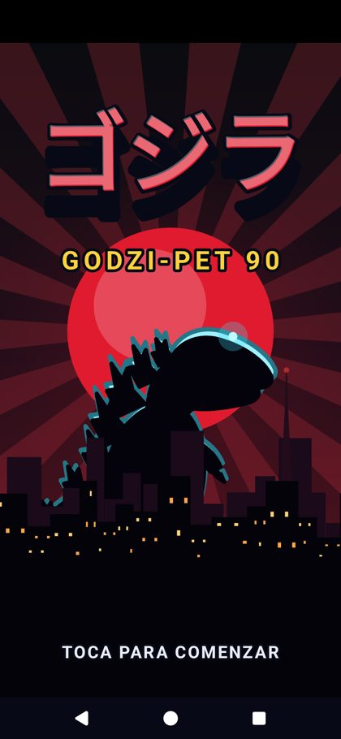
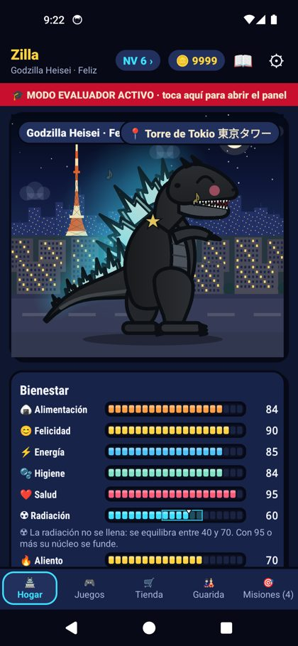
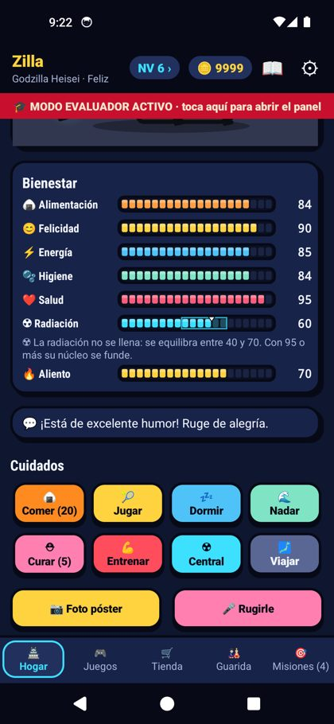
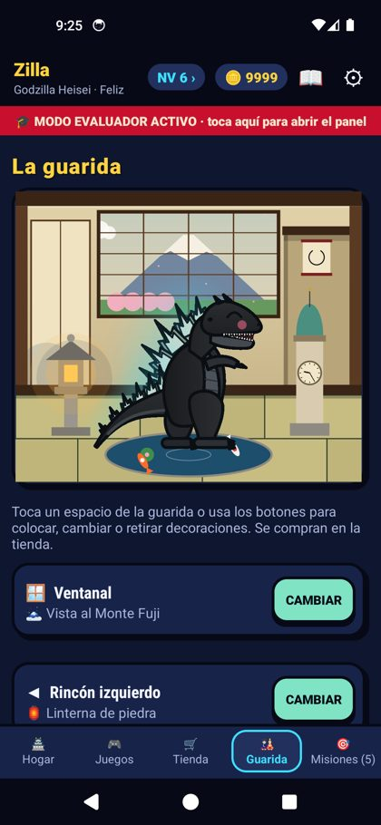
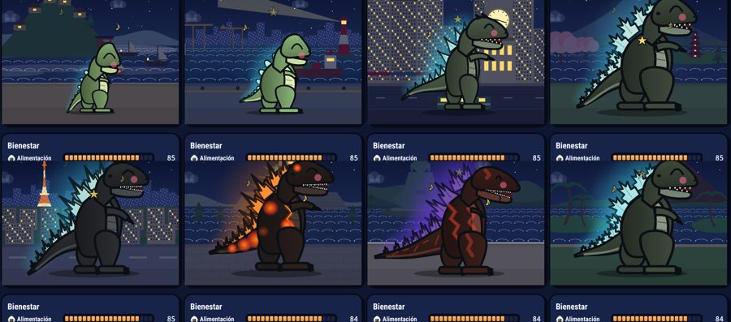
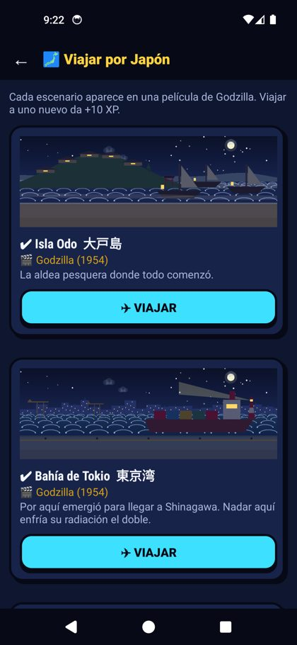
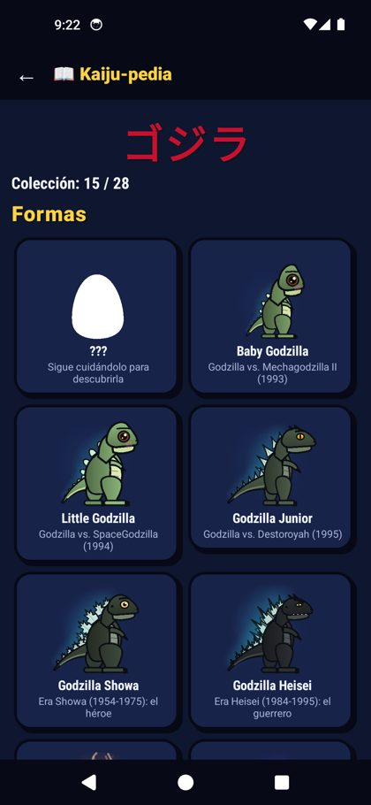
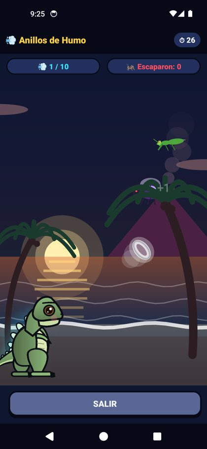
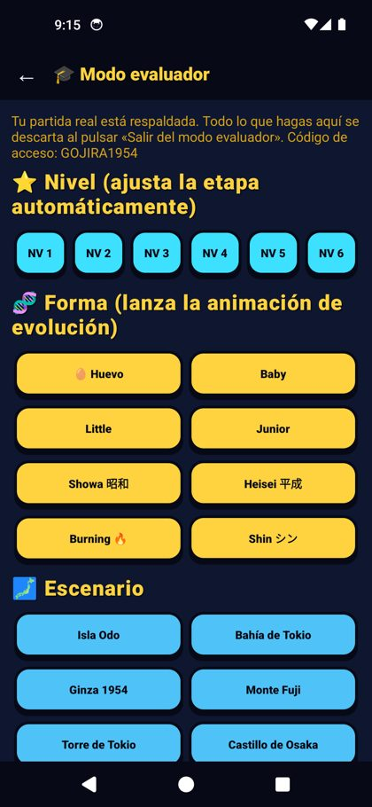
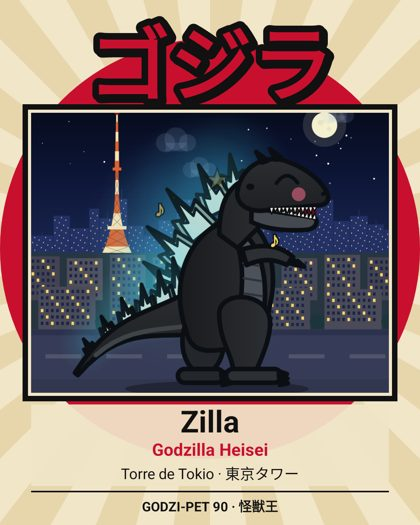
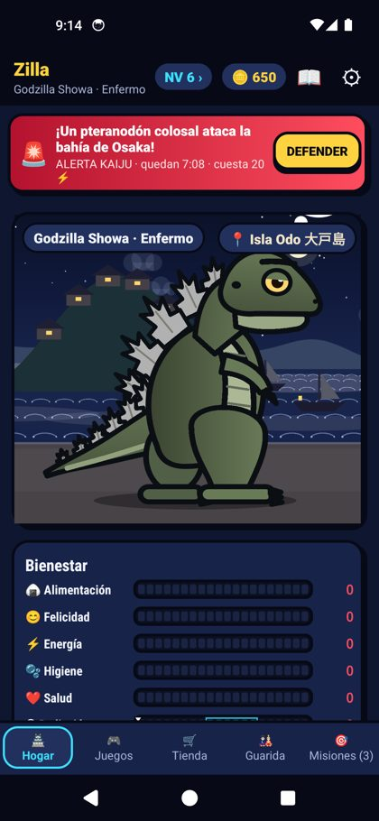
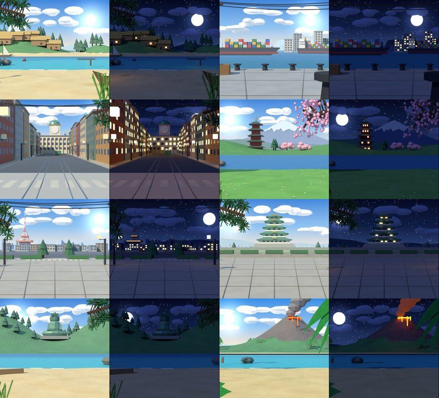
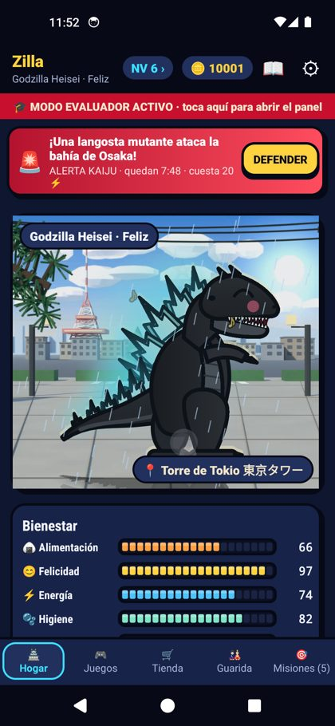
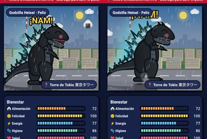
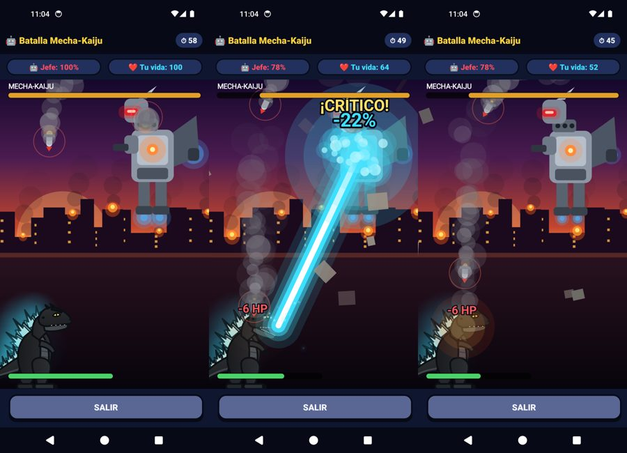
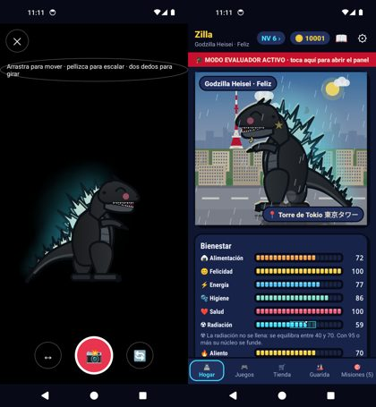
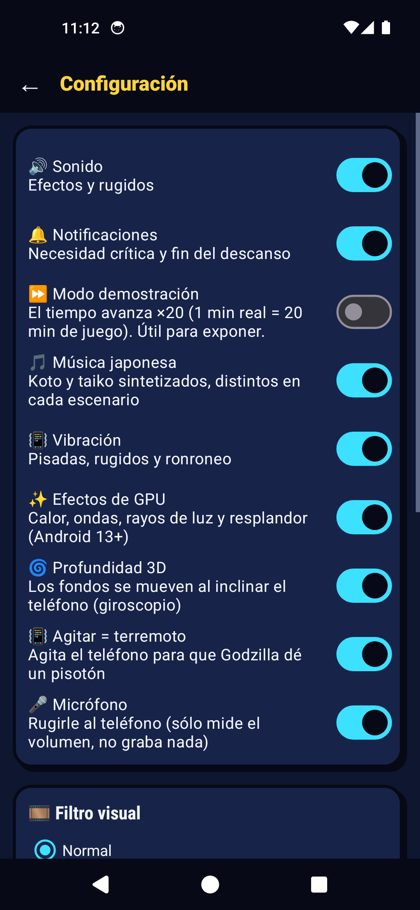
GOJIRA1954): fijar 80 de alimentación, pulsar +1 hora dos veces (→ 64), provocar una alerta Kaiju y una fusión, y mostrar las formas finales.Ejecutar: abrir la carpeta GodziPet90 en Android Studio y pulsar Run, o instalar app/build/outputs/apk/debug/app-debug.apk. Las pruebas se ejecutan con ./gradlew test.